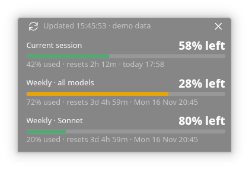

Claude Usage Monitor
See how much of your Claude limits are left, and when they reset, without opening anything.
Linux only, and unofficial: not affiliated with Anthropic. It reads Claude Code's login and an undocumented usage endpoint that may change. Built and tested on Fedora with KDE Plasma.

- Current session and weekly limits, with % left and a live reset countdown
- Tray icon: a ring showing % left, plus a right-click menu
- Desktop alert at 90% used, refreshes every 30 seconds
- Small, semi-transparent, optional autostart into the tray
Install (adds an app-menu entry, optional autostart)
git clone https://github.com/kranmal/claude-usage-monitor && cd claude-usage-monitor && ./install.sh --autostartRun
claude-usage-monitorTry it with fake data first
python3 claude_usage.py --demo